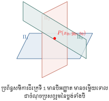
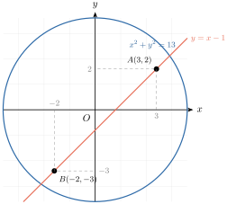
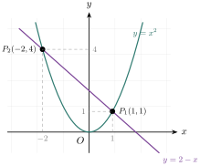
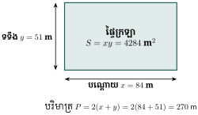

- ដោះស្រាយប្រព័ន្ធសមីការដឺក្រេទី 1 មានបីអញ្ញាត តាមវិធីបំបាត់ដោយបូក និងជំនួស
- ប្រើវិធីបំបាត់ និងជំនួសក្នុងការដោះស្រាយប្រព័ន្ធសមីការដឺក្រេទី 1 និងសមីការដឺក្រេទី 2 មានពីរអញ្ញាត
- ដោះស្រាយចំណោទអនុវត្តជាក់ស្តែងទាក់ទងនឹងប្រព័ន្ធសមីការ ។
1. ប្រព័ន្ធសមីការដឺក្រេទី 1 មានបីអញ្ញាត
សមីការដឺក្រេទី 1 ដែលជាប់ទាក់ទងនឹងបីអញ្ញាតហៅថា សមីការដឺក្រេទី 1 មានបីអញ្ញាត ។ សមីការទាំងនេះផ្តុំគ្នាបង្កើតបានជាប្រព័ន្ធសមីការដឺក្រេទី 1 មានបីអញ្ញាត ។
ក្នុងលំហធរណីមាត្រ សមីការដឺក្រេទី 1 មានបីអញ្ញាត \(\displaystyle ax + by + cz = d\) តាងឱ្យប្លង់មួយ ។ ដូច្នេះការដោះស្រាយប្រព័ន្ធសមីការមានបីអញ្ញាត គឺជាការស្វែងរកចំណុចប្រសព្វរួមនៃប្លង់ទាំងបី ។

ឧទាហរណ៍ : ដោះស្រាយប្រព័ន្ធសមីការដឺក្រេទី 1 មានបីអញ្ញាត
ដំណោះស្រាយ : គេបំបាត់អញ្ញាត \(\displaystyle z\) ដើម្បីបង្កើតប្រព័ន្ធសមីការដែលមានពីរអញ្ញាត \(\displaystyle x\) និង \(\displaystyle y\) ៖
យកសមីការ \(\displaystyle (1) + (2)\) គេបាន \(\displaystyle 2x + 3y = 20 \quad (4)\)
យកសមីការ \(\displaystyle (2) + (3)\) គេបាន \(\displaystyle 4x + y = 30 \quad (5)\)
ដោះស្រាយប្រព័ន្ធសមីការ \(\displaystyle (4)\) និង \(\displaystyle (5)\) ៖
គុណ \(\displaystyle (5)\) នឹង 3 ៖ \(\displaystyle 12x + 3y = 90 \quad (5')\)
យក \(\displaystyle (5') - (4)\) ៖ \(\displaystyle 10x = 70 \implies x = 7\)
ជំនួស \(\displaystyle x = 7\) ក្នុង \(\displaystyle (5)\) ៖ \(\displaystyle 4(7) + y = 30 \implies y = 30 - 28 = 2\)
ជំនួស \(\displaystyle x = 7, y = 2\) ក្នុង \(\displaystyle (1)\) ៖ \(\displaystyle 7 + 2 + z = 13 \implies z = 4\)
ដូច្នេះ ប្រព័ន្ធសមីការមានចម្លើយតែមួយគត់គឺ \(\displaystyle (x = 7,\, y = 2,\, z = 4)\) ។
លំហាត់គំរូ (ករណីគ្មានចម្លើយ) ដោះស្រាយប្រព័ន្ធសមីការ ៖
ដំណោះស្រាយ : យក \(\displaystyle (1) \times (-2) + (3)\) ៖
យក \(\displaystyle (2) \times (-2) + (3)\) ៖
បូកសមីការ \(\displaystyle (4) + (5)\) ៖
សមភាពមិនពិតបញ្ជាក់ថា ប្រព័ន្ធសមីការគ្មានចម្លើយទេ (សំណុំចម្លើយគឺ \(\displaystyle S = \emptyset\)) ។
ប្រតិបត្តិ : ដោះស្រាយប្រព័ន្ធសមីការដឺក្រេទី 1 មានបីអញ្ញាតខាងក្រោម ៖
- ក. \(\displaystyle \begin{cases} 4x + y - 3z = 11 \\ 2x - 3y + 2z = 9 \\ x + y + z = -3 \end{cases}\)
- ខ. \(\displaystyle \begin{cases} x + 2y = 5 \\ y + 2z = -1 \\ z + 5x = 7 \end{cases}\)
- គ. \(\displaystyle \begin{cases} x + 2y + 3z = 7 \\ 2x + 3y + z = 8 \\ 3x + y + 2z = 9 \end{cases}\)
ចម្លើយប្រតិបត្តិ :
- ក. \(\displaystyle (x = 2,\, y = -3,\, z = -2)\)
- ខ. \(\displaystyle \left(x = \frac{5}{3},\, y = \frac{5}{3},\, z = -\frac{4}{3}\right)\)
- គ. \(\displaystyle (x = 2,\, y = 1,\, z = 1)\)
2. ប្រព័ន្ធសមីការដឺក្រេទី 1 និងសមីការដឺក្រេទី 2
ប្រព័ន្ធសមីការនេះផ្តុំដោយសមីការដឺក្រេទី 1 មួយ និងសមីការដឺក្រេទី 2 មួយ មានពីរអញ្ញាត ។ វិធីទូទៅគឺទាញរកអញ្ញាតមួយពីសមីការដឺក្រេទី 1 រួចយកទៅជំនួសក្នុងសមីការដឺក្រេទី 2 ដើម្បីទទួលបានសមីការដឺក្រេទី 2 មានមួយអញ្ញាត ។
លំហាត់គំរូ 1 (បន្ទាត់និងរង្វង់) : ដោះស្រាយប្រព័ន្ធសមីការ ៖
ដំណោះស្រាយ : យក \(\displaystyle (1)\) ជំនួសក្នុង \(\displaystyle (2)\) ៖
ដោះស្រាយសមីការដឺក្រេទី 2 ៖ \(\displaystyle (x - 3)(x + 2) = 0 \implies x = 3\) ឬ \(\displaystyle x = -2\) ៖
- បើ \(\displaystyle x = 3 \implies y = 3 - 1 = 2\)
- បើ \(\displaystyle x = -2 \implies y = -2 - 1 = -3\)
ដូច្នេះ ប្រព័ន្ធសមីការមានគូចម្លើយ \(\displaystyle (x = 3,\, y = 2)\) និង \(\displaystyle (x = -2,\, y = -3)\) ។ តាមធរណីមាត្រ នេះជាកូអរដោនេនៃចំណុចប្រសព្វរវាងបន្ទាត់ \(\displaystyle y = x - 1\) និងរង្វង់ \(\displaystyle x^2 + y^2 = 13\) ។

លំហាត់គំរូ 2 (បន្ទាត់និងប៉ារ៉ាបូល) : ដោះស្រាយប្រព័ន្ធសមីការ ៖
ដំណោះស្រាយ : តាម \(\displaystyle (2) \implies y = 2 - x\) ។ ជំនួសក្នុង \(\displaystyle (1)\) ៖
គេបាន \(\displaystyle x = 1\) ឬ \(\displaystyle x = -2\) ៖
- បើ \(\displaystyle x = 1 \implies y = 2 - 1 = 1\)
- បើ \(\displaystyle x = -2 \implies y = 2 - (-2) = 4\)
ដូច្នេះ ចម្លើយគឺ \(\displaystyle (x = 1,\, y = 1)\) និង \(\displaystyle (x = -2,\, y = 4)\) ។

លំហាត់គំរូ 3 (ប្រព័ន្ធឆ្លាស់តាមទ្រឹស្តីបទវៀត) : ដោះស្រាយប្រព័ន្ធសមីការ ៖
ដំណោះស្រាយ : ដោយផលបូក \(\displaystyle S = x + y = 11\) និងផលគុណ \(\displaystyle P = xy = 30\) នោះ \(\displaystyle x\) និង \(\displaystyle y\) ជាឫសទាំងពីរនៃសមីការដឺក្រេទី 2 ៖
ដូច្នេះ ប្រព័ន្ធសមីការមានគូចម្លើយ \(\displaystyle (x = 5,\, y = 6)\) ឬ \(\displaystyle (x = 6,\, y = 5)\) ។
លំហាត់គំរូ 4 (ចំណោទជាក់ស្តែង) : ដីចម្ការមួយរាងចតុកោណកែងមានផ្ទៃក្រឡា \(\displaystyle 4284\text{ m}^2\) និងបរិមាត្រ \(\displaystyle 270\text{ m}\) ។ គណនាវិមាត្រនៃចម្ការនោះ ។

ដំណោះស្រាយ : តាង \(\displaystyle x\) ជាបណ្តោយ និង \(\displaystyle y\) ជាទទឹងនៃចម្ការ \(\displaystyle (x \ge y > 0)\) ៖
\(\displaystyle x\) និង \(\displaystyle y\) ជាឫសនៃសមីការ \(\displaystyle t^2 - 135t + 4284 = 0\) ៖
ដោយ \(\displaystyle x \ge y\) យើងបានបណ្តោយ \(\displaystyle x = 84\text{ m}\) និងទទឹង \(\displaystyle y = 51\text{ m}\) ។
លំហាត់និងដំណោះស្រាយ
ដោះស្រាយប្រព័ន្ធសមីការដឺក្រេទី 1 មានពីរអញ្ញាត ៖
- ក. \(\displaystyle \begin{cases} 3x - 5y = -1 \\ 3x - 5y = 3 \end{cases}\)
- ខ. \(\displaystyle \begin{cases} x + 5y = 11 \\ 4x - y = 2 \end{cases}\)
- គ. \(\displaystyle \begin{cases} x - 3y = 0 \\ 2x + y = 14 \end{cases}\)
- ឃ. \(\displaystyle \begin{cases} 3x - y = -6 \\ x + 5y = -2 \end{cases}\)
ដំណោះស្រាយ :
- ក. ដកសមីការទាំងពីរ ៖ \(\displaystyle 0 = -4\) (មិនពិត) \(\displaystyle \implies\) ប្រព័ន្ធគ្មានចម្លើយ (\(\displaystyle S = \emptyset\)) ។
- ខ. តាមសមីការទីមួយ \(\displaystyle x = 11 - 5y\) ជំនួសក្នុងទីពីរ ៖ \(\displaystyle 4(11 - 5y) - y = 2 \implies 44 - 21y = 2 \implies 21y = 42 \implies y = 2\) នាំឱ្យ \(\displaystyle x = 11 - 10 = 1\) ។ ចម្លើយគឺ \(\displaystyle (1, 2)\) ។
- គ. \(\displaystyle x = 3y \implies 2(3y) + y = 14 \implies 7y = 14 \implies y = 2 \implies x = 6\) ។ ចម្លើយគឺ \(\displaystyle (6, 2)\) ។
- ឃ. \(\displaystyle y = 3x + 6 \implies x + 5(3x + 6) = -2 \implies 16x = -32 \implies x = -2 \implies y = 0\) ។ ចម្លើយគឺ \(\displaystyle (-2, 0)\) ។
ដោះស្រាយប្រព័ន្ធសមីការ ៖
- ក. \(\displaystyle \begin{cases} x + y + z = 6 \\ 3x - y - 3z = 0 \\ x - 2y + 5z = 1 \end{cases}\)
- ខ. \(\displaystyle \begin{cases} x + y = 3 \\ y + z = 5 \\ z + x = 6 \end{cases}\)
- គ. \(\displaystyle \begin{cases} 2x + y = 5 \\ x^2 + y^2 = 25 \end{cases}\)
- ឃ. \(\displaystyle \begin{cases} 3x + 2y = 6 \\ 9x^2 - 4y^2 = 108 \end{cases}\)
ដំណោះស្រាយ :
- ក. បូក (1) + (2) ៖ \(\displaystyle 4x - 2z = 6 \implies 2x - z = 3\) ។ គុណ (1) នឹង 2 រួចបូកនឹង (3) ៖ \(\displaystyle 3x + 7z = 13\) ។ ដោះស្រាយរកបាន \(\displaystyle x = 2, z = 1\) រួចជំនួសរកបាន \(\displaystyle y = 3\) ។ ចម្លើយគឺ \(\displaystyle (2, 3, 1)\) ។
- ខ.
បូកសមីការទាំងបីបញ្ចូលគ្នា ៖ \(\displaystyle 2(x + y + z) = 14 \implies x + y + z = 7\) ។
- \(\displaystyle z = 7 - (x + y) = 7 - 3 = 4\)
- \(\displaystyle x = 7 - (y + z) = 7 - 5 = 2\)
- \(\displaystyle y = 7 - (z + x) = 7 - 6 = 1\)
ចម្លើយគឺ \(\displaystyle (x = 2,\, y = 1,\, z = 4)\) ។
- គ. \(\displaystyle y = 5 - 2x \implies x^2 + (5 - 2x)^2 = 25 \iff 5x^2 - 20x = 0 \iff 5x(x - 4) = 0\) នាំឱ្យ \(\displaystyle x = 0 \implies y = 5\) ឬ \(\displaystyle x = 4 \implies y = -3\) ។ ចម្លើយគឺ \(\displaystyle (0, 5)\) និង \(\displaystyle (4, -3)\) ។
- ឃ. \(\displaystyle 9x^2 - 4y^2 = (3x - 2y)(3x + 2y) = 108 \implies (3x - 2y)(6) = 108 \implies 3x - 2y = 18\) ។ បូកជាមួយ \(\displaystyle 3x + 2y = 6 \implies 6x = 24 \implies x = 4\) និង \(\displaystyle y = -3\) ។ ចម្លើយគឺ \(\displaystyle (4, -3)\) ។
រកតម្លៃ \(\displaystyle m\) និង \(\displaystyle n\) ដើម្បីឱ្យប្រព័ន្ធសមីការ \(\displaystyle \begin{cases} mx + ny = 8 \\ 5x + 3y = 4 \end{cases}\) មានឫសរាប់មិនអស់ ៖
ដំណោះស្រាយ : ប្រព័ន្ធសមីការមានឫសរាប់មិនអស់ លុះត្រាតែ \(\displaystyle \frac{m}{5} = \frac{n}{3} = \frac{8}{4} = 2\) ៖\[m = 5 \times 2 = 10, \quad n = 3 \times 2 = 6 \text{ ។}\]រកតម្លៃ \(\displaystyle a\) ដើម្បីឱ្យប្រព័ន្ធសមីការ \(\displaystyle \begin{cases} 4x + 3y = 12 \\ 2x + ay = 5 \end{cases}\) គ្មានឫស ៖
ដំណោះស្រាយ : ប្រព័ន្ធគ្មានឫស លុះត្រាតែបន្ទាត់ទាំងពីរស្របគ្នា គឺ \(\displaystyle \frac{4}{2} = \frac{3}{a} \neq \frac{12}{5}\) ៖\[2 = \frac{3}{a} \implies a = \frac{3}{2} = 1.5 \text{ ។}\]ត្រីកោណកែងមួយមានរង្វាស់អុីប៉ូតេនុសស្មើនឹង \(\displaystyle 13\text{ cm}\) និងផលបូកជ្រុងពីរទៀតស្មើនឹង \(\displaystyle 17\text{ cm}\) ។ រករង្វាស់ជ្រុងទាំងពីរនោះ ៖
ដំណោះស្រាយ : តាង \(\displaystyle a, b\) ជាប្រវែងជ្រុងជាប់មុំកែង \(\displaystyle (a, b > 0)\) ៖\[\begin{cases} a + b = 17 \\ a^2 + b^2 = 13^2 = 169 \end{cases}\]យើងដឹងថា \(\displaystyle (a + b)^2 = a^2 + 2ab + b^2 \implies 17^2 = 169 + 2ab \implies 289 - 169 = 2ab \implies 2ab = 120 \implies ab = 60\) ។
\(\displaystyle a\) និង \(\displaystyle b\) ជាឫសនៃសមីការ \(\displaystyle t^2 - 17t + 60 = 0 \iff (t - 5)(t - 12) = 0\) នាំឱ្យ \(\displaystyle t = 5\) ឬ \(\displaystyle t = 12\) ។
ដូច្នេះ ប្រវែងជ្រុងជាប់មុំកែងទាំងពីរគឺ \(\displaystyle 12\text{ cm}\) និង \(\displaystyle 5\text{ cm}\) ។គេឱ្យត្រីកោណកែងមួយមានអុីប៉ូតេនុសប្រវែង \(\displaystyle 41\text{ cm}\) និងផ្ទៃក្រឡា \(\displaystyle 180\text{ cm}^2\) ។ រកប្រវែងជ្រុងទាំងពីរនៃមុំកែង ៖
ដំណោះស្រាយ : តាង \(\displaystyle x, y\) ជាជ្រុងជាប់មុំកែង ៖\[\begin{cases} x^2 + y^2 = 41^2 = 1681 \\ \frac{1}{2}xy = 180 \implies xy = 360 \end{cases}\]គណនា \(\displaystyle (x + y)^2 = x^2 + 2xy + y^2 = 1681 + 2(360) = 1681 + 720 = 2401 = 49^2 \implies x + y = 49\) ។
គណនា \(\displaystyle (x - y)^2 = x^2 - 2xy + y^2 = 1681 - 720 = 961 = 31^2 \implies |x - y| = 31\) ។
ដោយតាង \(\displaystyle x > y\) គេបានប្រព័ន្ធ ៖\[\begin{cases} x + y = 49 \\ x - y = 31 \end{cases} \implies 2x = 80 \implies x = 40, \quad y = 9 \text{ ។}\]ដូច្នេះ ជ្រុងជាប់មុំកែងទាំងពីរមានប្រវែង \(\displaystyle 40\text{ cm}\) និង \(\displaystyle 9\text{ cm}\) ។
ខ្លឹមសារ៖ សៀវភៅពុម្ពគណិតវិទ្យាថ្នាក់ទី១០ របស់ក្រសួងអប់រំ យុវជន និងកីឡា · វាយអត្ថបទ គូររូបភាពឡើងវិញ និងរៀបចំលើអនឡាញដោយលោកគ្រូ សាន សុខលី សម្រាប់ការសិក្សាដោយឥតគិតថ្លៃ និងមិនរកប្រាក់ចំណេញ។ មិនមែនជាការបោះពុម្ពផ្លូវការរបស់ក្រសួងទេ។